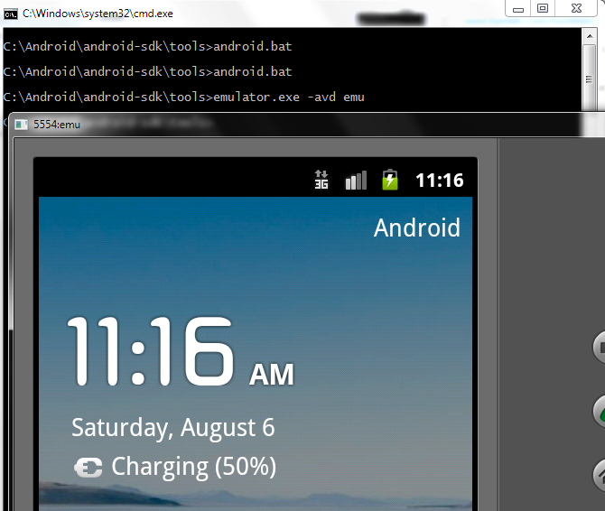
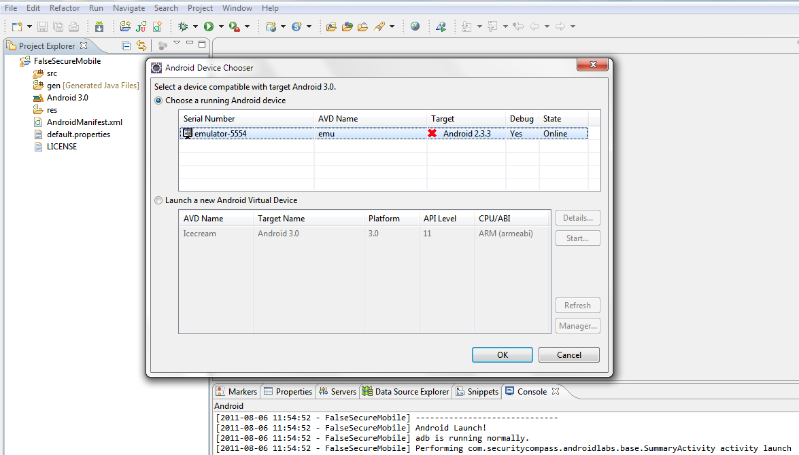
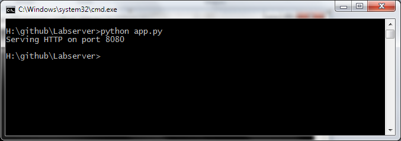
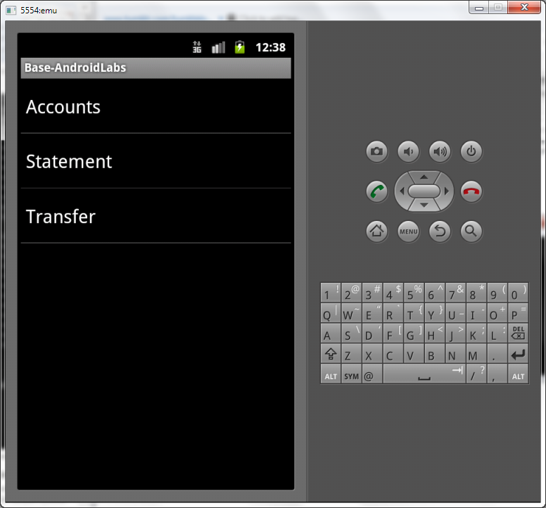

ExploitMe Mobile Setup guide
Our SC labs are hosted on GitHub, a freely useable source code repository. We've tried to make the process as seamless as possible for you to contribute to our labs, so there are a couple things you should know in order to get started.
Our labs are organized within the following branches:
- remotes/origin/Base
- remotes/origin/AdvancedEncryptionSolution
- remotes/origin/BasicEncryptionSolution
- remotes/origin/FilePermissionsSolution
- remotes/origin/MemoryProtectionSolution
- remotes/origin/PasswordComplexitySolution
- remotes/origin/SecureLoggingSolution
ExploitMeMobile's (EMM) Android app contains six labs within the Base branch. Each of the other branches are solutions to the vulnerability, how one can fix the security vulnerability demonstrated.
We recommend taking the following approach to hacking this Android application.
- Download and build the EMM "Base" project and install it to the emulator. This is the vulnerable android app. It contains all six lab exercises.
- Run through each exercise to understand how the Android application works and the vulnerabilities.
- Inspect the solutions to each lab and see what the best practices are to securely programming the application.
How to build:
You can build either using your favorite IDE (Eclipse, etc) or command line.
How to use:
Note: You must make sure you've installed an configured the Android SDK properly including the Android platform tools, such as "adb" and "emulator". We can't help too much here, but you can see Google's instructions here. If you can't run "adb" from the command line, you have likely not configured the SDK properly, or haven't included "adb" in your path.
Run the emulator by using AVD and emulator:
If you've never used AVD, you have to create a name and configuration for your emulator. AVD can be found in your SDK/platform-tools folder. Run:
./android.bat

After creating your emulator, run it by clicking "Start" or through command line by:
./emulator -avd

Now that your emulator is up and running (it will take a while on first start), you can build and push the apk into the emulator by running:
./adb install emm.apk
or you could also run through the eclipse debugger as shown below: 
Now, run lab server
python app.py

And finally open the EMM Android application on your emulator device. Upon first login, you'll be prompted with a login screen.
The default users as configured with this mobile application server are:
jdoe / password
bsmith / password
After entering these banking credentials, you'll be requested to enter a screen lock password which can be anything you wish. this lock password will be used for any future logins to prevent the need to re-enter your credentials.
After completing these steps, you'll be presented with the main ExploitMe Mobile screen below.
